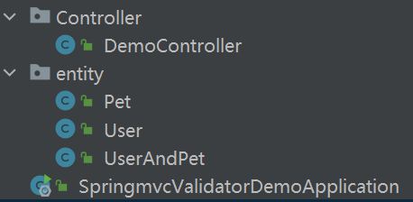
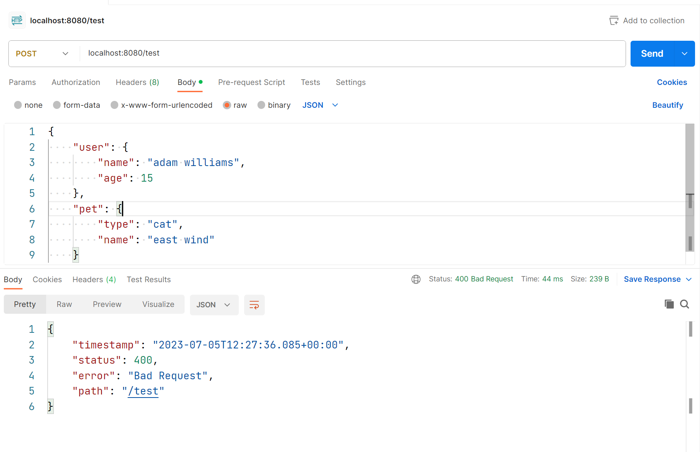
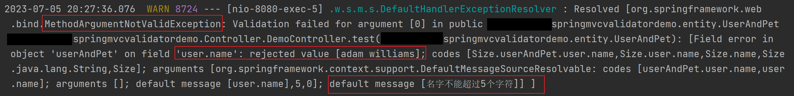

Automatic Validation of Request Parameters in Spring MVC
Preface
The controller methods (handlers) are responsible for validating request parameters.
In traditional approaches, validation of request parameters is performed at the beginning of each method. If any parameter fails to meet the conditions, an exception is thrown, or an HTTP error is returned early.
The Validation API provides a series of annotations. By placing these annotations on the properties of an entity class, Spring MVC automatically performs request parameter validation based on the semantics of these annotations. If a parameter does not meet the conditions, an exception is thrown. This saves developers from manually validating request parameters.
The class responsible for automatic parameter validation is actually imported by Spring Boot through automatic configuration, so we need to use the corresponding starter dependencies.
Demo
Dependencies
1 | <dependency> |
validation-api is the focus of this post.
Project Structure
A standard Spring Boot project generated by Spring Initializer.
entity
User
1 | package org.gustav.springmvcvalidatordemo.entity; |
@NotBlank: Used on properties of type CharSequence, indicating that the field is non-empty and must have a length of at least 1.
@Size: Used on properties of type CharSequence and collection classes, indicating the number of characters/elements in the field. max = 5 is the upper bound, and the value cannot exceed this limit. When the property value does not meet the conditions, Spring MVC throws an exception. If the message property is set, the exception content will include the value of message.
@NotNull: Literally means the field cannot be null.
@Min, @Max: Used on numeric types to constrain the size of the numeric value.
Pet
1 | package org.gustav.springmvcvalidatordemo.entity; |
UserAndPet
1 | package org.gustav.springmvcvalidatordemo.entity; |
The @Valid annotation tells Spring MVC that the class it annotates also has fields that need validation.
controller
1 | package org.gustav.springmvcvalidatordemo.Controller; |
@Validated instructs Spring MVC that the current request parameters need to be validated.
Sending Requests Using Postman
Valid Request
The request body is as follows:
1 | { |
Invalid Request
Intentionally exceeding the length limit of user.name. The request body is as follows:
1 | { |
The server returns a 400 error.

The server throws a MethodArgumentNotValidException exception. The content indicates that user.name is an illegal parameter, and our custom message is also displayed.

Conclusion
By using Validation annotations, we can easily implement request parameter validation without writing a lot of code.
Imagine if we were to validate request parameters using traditional approach. Just validating user.name would require writing a lot of code:
1 |
|
Note that this convenient validation is based on the foundation of Spring MVC and Spring Boot. What classes Spring Boot automatically configures, and how Spring MVC uses these classes to do request parameter validation, are beyond the scope of this article. Readers can read the source code on their own or explore other articles.